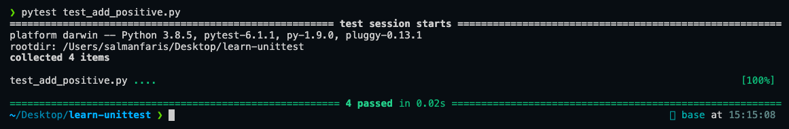
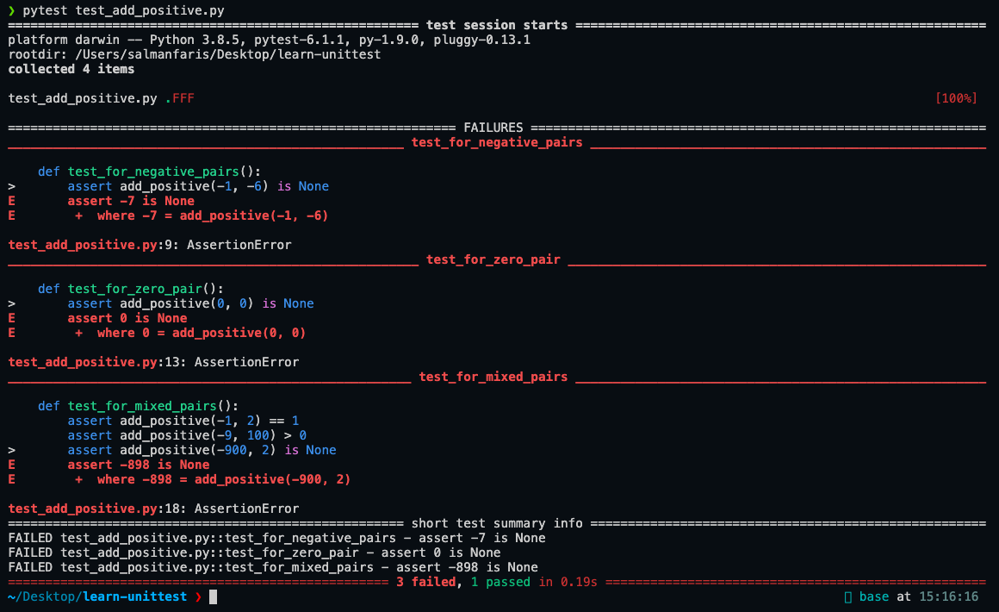

It is a common scene that we want to test our functions after we’ve done writing them. In Python, we can usually do this by printing to the console. For example, suppose we are interested in testing the following function:
def add_positive(x, y):
"""Add two positive integers x and y. If the sum
is negative or zero, return None."""
res = x + y
return res if res > 0 else Nonewhich returns the sum of the two integers x and y if the output is strictly positive, or else return None. Since we are adding two positive integers, we expect that the add_positive function returns a positive integer as well. So we can try a few pairs, say, add_positive(2, 3) and add_positive(1, 1), and we expect these to return 5 and 2 respectively; both greater than 0. If we try add_positive(-1, -5), then this should return None as it yields -6 instead which is less than 0. If we want to test our function with multiple inputs, we can do something like a for loop. So maybe something like:
for x, y in [(2, 3), (1, 1), (-1, -2), (100, 90), ...]:
res = add_positive(x, y)
print(res)which should yield
>> 5
>> 2
>> None
>> 190and then we eyeball each of the output to see if it as expected.
This is of course a correct way to do it as we can evaluate whether the output on the console is as expected; but is it efficient?
🧠 Why unit testing is a no-brainer
In a typical life cycle of a function, there are three situations where we would want to test our functions:
- The first time it is implemented.
- When a test fails, we fix the bug, and then we have to redo testing.
- When implementing a new feature or refactoring code.
Imagine how many times we would have to manually test this function. If it would take 3 minutes per (manual) test, and if we would have to do it 100 times over the function’s whole life cycle, then we would have effectively spent 3 x 100 = 300 minutes, which is roughly 5 hours of testing! Now if we have 10 functions to test, it would take us 50 hours or roughly 2 days worth of time to test these functions! I don’t know about you, but that sounds like a lot of time to me for only 10 functions. This is why we would want to automate the testing process by writing unit tests, which, together with the planning phase, requires about an hour to write in perpetuity (in theory).
Manually testing a function throughout its whole life cycle may take you 5 hours; whereas writing a properly planned unit test may take you only an hour, and this is one-fifth of the former.
There are a variety of Python libraries to do unit testing, some of which are:
pytestunittestnosetestsdoctest
🧪 Basic unit testing procedure
In this post, we will look at pytest because it is simply the most popular (hence, a lot of support, say, on StackOverflow) and easiest to use. We start by installing pytest if it’s not already installed:
pip install pytestStep 1: Creating the test module
Assume that the add_positive() function lies in a module called add_positive.py. We begin the unit testing process by creating a file called test_add_positive.py in the same directory as add_positive.py. Such a file will contain the unit tests of functions in add_positive.py, and is called a test module. The test_ in front of test_add_positive.py is important as it lets pytest knows that this is a file containing unit tests.
_Remark: The test module for the module add_positive.py does not have to be named test_add_positive.py. You can name it test_x.py or test_covid.py or whatever as long as it is prepended with test_. But it is good practice to follow the naming convention of test*module_name to trace which module is this test module testing.*
Step 2: Importing inside the test module
The next step is to (mainly) import two things:
- The
pytestmodule; - and the module (or function) we want to test.
So at the top of our test module test_add_positive.py, we would have:
import pytest
from add_positive import add_positiveStep 3: Begin writing unit tests
A unit test is basically a Python function, no more and no less. The only thing special about a unit test is that it is prepended by test_ in its name. This is just to tell pytest to use it as part of the testing procedure. Here is an example of a unit test declaration:
def test_for_positive_pairs():
...Inside the body of a unit test are assertions, and this is the actual testing process. We want to test if our add_positive() function returns correctly if positive pairs (x, y) are passed into the function. So we assert the following:
def test_for_positive_pairs():
assert add_positive(3, 5) == 8
assert add_positive(99999, 99999) == 199998How about if we want to add a second unit test which tests when a zero pair i.e. (0, 0) is passed into the function? Well we just write another function right below it. We expect add_positive(0, 0) to return None, so we write exactly that:
def test_for_positive_pairs():
assert add_positive(3, 5) == 8
assert add_positive(99999, 99999) == 199998
def test_for_zero_pair():
assert add_positive(0, 0) is NoneI would like to add two more tests which test the add_positive function when negative and mixed pairs are fed into the function. The whole test module should now look something like this:
import pytest
from add_positive import add_positive
def test_for_positive_pairs():
assert add_positive(3, 5) == 8
assert add_positive(99999, 99999) == 199998
def test_for_negative_pairs():
assert add_positive(-1, -6) is None
assert add_positive(-99, -99) is None
def test_for_zero_pair():
assert add_positive(0, 0) is None
def test_for_mixed_pairs():
assert add_positive(-1, 2) == 1
assert add_positive(-9, 100) > 0
assert add_positive(-900, 2) is NoneRemark: Note that you can get as creative as you’d like with the values you’re testing. It is good practice to always consider edge cases in the unit test, but this is a topic of a later post.
Step 4: Running pytest and reading the test report
Once you’re done with writing the test module, testing is as easy as opening your terminal, cd-ing into the directory containing the test module, and executing:
pytest test_add_positive.pyIf the implementation of add_positive() is correct (with respect to our tests), you should see a test report like this.

Just ignore everything above “collected 4 items” as it is not too important. The breakdown of this test report is the following:
- “Collected 4 items” means that we will be executing 4 unit tests.
- The 4 green dots indicates that we have pass all 4 of them, and they are sequential (see what happens when 1 fail below).
- The obvious “4 passed in 0.02s” message is the summary.
📌 Why unit tests are important in prod
Three months after the add_positive.py code has been deployed, your colleague Gilfoyle modified the add_positive() function returning only the sum:
def add_positive(x, y):
"""Add two positive integers x and y. If the sum
is negative or zero, return None."""
return x + yApparently, he didn’t read the short description of the function; he thought that you’re adding an unnecesary check. However, the function is supposed to work like that – only returning if the sum is positive (think of another module which relies on the correctness of this function).
If there were no unit tests written to check this modification, this seemingly trivial edit by Gilfoyle could have been merged into the main branch and could possibly crash the whole system! Thankfully, we implemented continuous integration and upon making a pull request, Gilfoyle was bombarded with the following test report:

Here is a breakdown of the report:
- “Collected 4 items” means the same as before.
- The first green dot means we passed the first unit test, but the subsequent F’s means we failed the second, third and fourth unit test;
- this is reflected in the FAILURES section below it, showing which exact lines contribute to these failures.
- The “3 failed, 1 passed in 0.19s” message is the summary.
Sometimes, we just want to run the test up until the first failure. This can be done by adding a -x flag like so:
pytest -x test_add_positive.pyNow you might be wondering, what to do if we have multiple functions to test in the same module given that this one single add_positive function alone requires 4 unit tests. Things can start getting really messy right? To solve this issue, we can create a class containing these unit tests for each function we want to test. This will be a topic of a future post on testing.